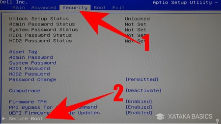

Guía de Instalación de Windows en Notebooks
Preparación del Medio de Instalación
Descargar la imagen del sistema operativo (ISO): Visita la página oficial del sistema operativo para descargar la ISO.
Crear un medio de instalación USB: Utiliza herramientas como Rufus, Etcher o la herramienta de creación de medios de Windows. Asegúrate de seleccionar "GPT para UEFI" en las opciones de partición.

Configuración del BIOS/UEFI
Entrar en el menú UEFI/BIOS: Reinicia tu PC y presiona la tecla correspondiente (F2, F10, DEL, etc.) para entrar al menú UEFI/BIOS.
Habilitar UEFI: En el menú de configuración asegúrate de que el modo de arranque esté configurado en UEFI y no en Legacy.

Deshabilitar Secure Boot temporalmente: Ve a la configuración de Secure Boot y deshabilítalo. Esto a veces es necesario para instalar ciertos sistemas operativos.
Instalación del Sistema Operativo
Arrancar desde el USB: Conecta el USB y selecciona arrancar desde él en el menú de arranque.
Sigue el proceso de instalación: Selecciona las opciones de idioma, formato del disco y procede con la instalación.
Manejo de las Claves de Seguridad (Secure Boot)
Habilitar Secure Boot: Después de la instalación, vuelve al menú UEFI/BIOS y habilita Secure Boot.
Agregar claves de seguridad: Algunas distribuciones de Linux y versiones de Windows permiten agregar sus claves de seguridad al firmware para asegurar que solo se ejecuten sistemas operativos de confianza.
Requisitos de Instalación
Windows 11

- Procesador: 2 o más núcleos de 1 GHz o más y tiene que ser un procesador de 64 bits compatible o sistema en un chip (SoC).
- Memoria RAM: Necesitarás un mínimo de 4 GB de memoria RAM.
- Almacenamiento: Necesitarás un mínimo de 64 GB de espacio libre en el disco duro donde vayas a instalarlo.
- Firmware del sistema: Necesitarás un ordenador con UEFI y compatible con Secure Boot.
- TPM: Necesitas compatibilidad con el Módulo de plataforma segura 2.0 o TPM 2.0.
- Tarjeta gráfica: Tu tarjeta gráfica necesita ser compatible con DirectX 12 o posterior y con el controlador WDDM 2.0.
- Pantalla: Necesitarás una pantalla de un mínimo de 9 pulgadas en diagonal con 720p de alta definición y canal de 8 bits por color.
- Otros: Vas a necesitar tener una cuenta de Microsoft y necesitarás estar conectado a Internet para la configuración inicial y cualquier actualización.
Windows Server 2022
- Procesador: 1.4 GHz 64-bit.
- Memoria RAM: 512 MB (2 GB para la opción de instalación Server with Desktop Experience).
- Almacenamiento: 32 GB.
- Tarjeta gráfica: Compatible con Super VGA (1024 x 768).
Funciones del Módulo TPM
- Almacenamiento seguro de claves.
- Generación de claves.
- Integridad de la plataforma.
- Cifrado de datos.
- Autenticación.
Utilitarios para Cambiar el Tamaño de las Particiones
- GParted
- MiniTool Partition Wizard
- EaseUS Partition Master
Gestores de Arranque para Elegir Sistemas Operativos Múltiples
| Gestor de arranque | Soporte MBR | Soporte UEFI | Características |
|---|---|---|---|
| GRUB (GRand Unified Bootloader) | Sí | Sí | Personalizable, soporte para múltiples sistemas operativos y configuraciones avanzadas. |
| rEFInd | No | Sí | Interfaz gráfica amigable, fácil de configurar, ideal para sistemas con EFI. |
| Clover Bootloader | Sí | Sí | Usado comúnmente en hackintosh, ofrece soporte extenso para macOS. |
| Windows Boot Manager | Sí | Sí | Integrado en Windows, fácil de usar para configuraciones dual boot con Windows. |
| Syslinux | Sí | No | Ligero, fácil de configurar para entornos Linux en MBR. |
Comparativa de Administradores de Archivos
| Administrador de Archivos | Plataforma | Funcionalidades | Capacidades de Expansión |
|---|---|---|---|
| Windows File Explorer | Windows | Búsqueda rápida, acceso a red, integración con OneDrive | Limitado a complementos de terceros |
| Finder | macOS | Integración con iCloud, gestión de etiquetas, fácil de usar | Integrado con aplicaciones de macOS |
| Nautilus | Linux (GNOME) | Soporte para extensiones, integración con servicios en la nube | Amplia variedad de extensiones |
| Dolphin | Linux (KDE) | Vista dividida, pestañas, terminal integrado | Soporte para plugins y scripts |
| Thunar | Linux (Xfce) | Ligero, rápido, soporte para plugins | Extensiones disponibles a través de plugins |
| Midnight Commander | Multiplataforma | Interfaz de texto, soporte para FTP y SFTP | Altamente personalizable mediante scripts |
| Total Commander | Windows | Pestañas, comparación de archivos, cliente FTP integrado | Soporte para plugins |
| Double Commander | Multiplataforma | Pestañas, doble panel, cliente FTP integrado | Compatible con plugins de Total Commander |
| Caja | Linux (MATE) | Soporte para plugins, vista dividida | Extensiones disponibles a través de plugins |
| Krusader | Linux (KDE) | Interfaz de doble panel, búsqueda avanzada, soporte para archivos comprimidos | Extensiones disponibles a través de plugins |